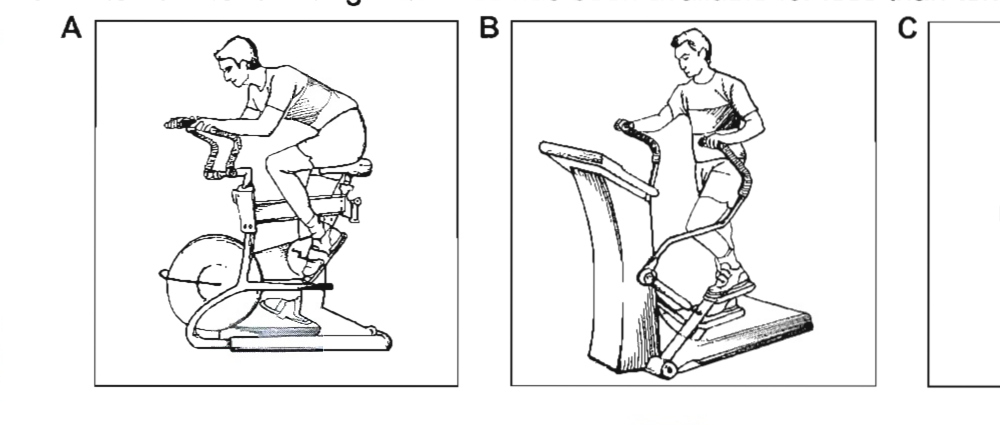

Pre-listening: put the words into two groups
You are going to hear a speaker at an environmental awareness conference talking about a European satellite called Envisat.
Before you listen, put the words below into two groups: the environment and satellites. Write E (environment) or S (satellites) next to each word.
Listen and complete the notes — Track 11
Track 11 — the Envisat talk
Context listening — environmental awareness conference
Now listen to the talk and complete the notes below. Write no more than two words or a number for each answer.
Envisat has instrument systems.
In the 1990s ESA launched and .
ESA will spend 2.3 billion euros over .
This is the same as of coffee per person per year.
Underline the correct words — Track 11
Underline the correct words. Listen again to check your answers.
Look at your answers to Exercise 3 and answer these questions
B1 — Articles
a/an
We use a/an:
- To refer to something for the first time: I'd like to talk to you today about an exciting development.
- To refer to any one from a group of several: Climate protection is a challenge for our entire society. (one of many challenges)
- To classify people or things as belonging to a group: Envisat is a fully-equipped observation satellite.
- To say what job somebody does: My brother is an engineer.
the
We use the:
- When the listener/reader knows which thing we mean (it may have been mentioned before):
Envisat is a fully-equipped observation satellite. The satellite was launched in 2002. - When it is understood which thing we mean: As part of the conference on environmental awareness … (we are at the conference now, so it is clear which one I mean). Compare: I went to a conference on environmental awareness last week. (the person I am talking to does not know which conference I mean)
- When there is only one of this thing: the earth, the sun, the twentieth century, the sixties, the Government, the Prime Minister
- For superlatives (see Unit 11): It is equipped with the best eyes possible.
- To talk about playing a musical instrument: He plays the piano and she plays the guitar.
- With certain proper nouns: nationalities (the British, the Chinese), rivers (the Thames, the Yangtze), island groups (the Maldives), mountain ranges (the Alps), seas and oceans (the Black Sea, the Pacific), country names that represent a group (the United Kingdom), many famous/historical buildings (the White House), noun phrases with of (the Great Wall of China, the Temple of Heaven)
No article
We use no article:
- With plural or uncountable nouns to talk generally about things:
It will deliver information about our changing environment.
It offers everything that scientists could wish for. (scientists in general, not a specific group) - With certain proper nouns: continents (Europe), countries (Australia), states or counties (Michigan), towns and cities (Tokyo), mountains (Everest), lakes (Lake Superior), companies (Microsoft), buildings and places with the name of a town (Heathrow Airport)
- With mealtimes: I have lunch at 12.30.
- In common expressions after prepositions: to/at school/university; to/in class; in prison/hospital/bed
B2 — Demonstratives: this, that, these, those
We use these words to show whether something is near or remote, in terms of time or place:
| near | remote | |
|---|---|---|
| time | I'd like to talk to you this morning about an exciting development. (today) | My mother called me later that day. (I am telling you this on a different day) |
| place | I like these pictures. (here) | Oh, I prefer those pictures. (over there) |
We can use this/that/these/those to refer back to something previously mentioned in the text:
- The total cost of the Envisat programme is 2.3 billion euros over 15 years. Included in this sum … (this sum = 2.3 billion euros)
- Seeing the earth from outer space highlights how tiny and fragile our planet is. Envisat helps people to understand that. (= understand how tiny and fragile our planet is)
- There is often very little difference between this and that when used in this way, so we could say: Envisat helps people to understand this.
B3 — Possessives
- We use possessive determiners (my/your/his/her/its/our/their) to tell us what or who something belongs to: our blue planet; their children
- We cannot use possessive determiners after other determiners (e.g. a, the). We use determiner + noun + of + possessive pronoun: this planet of ours (not
this our planet) - We use 's with singular nouns and irregular plural nouns. We use s' after regular plural nouns: Europe's technological showpiece; the children's toys; my parents' house
- We usually use noun + of instead of 's when the thing we are referring to is not a person or animal: the price of the hotel (not
the hotel's price)
B4 — Inclusives
each, every
- Each and every are used with a singular noun and verb. Each is used for things or people in a group of two or more, with a focus on the individuals in the group: Each European citizen has therefore invested seven euros in the environment.
- Every is used for three or more things, with a focus on the group. Often the difference in focus between each and every is very small: Every citizen will have access to precise information about changes in the environment.
- We can use each (but not every) + of + noun/pronoun: Each of the students gave the teacher a present. (not
every of the students)
all, most, some
- We use all/most/some + plural noun and verb to talk about things in general: Most children like sweets. Some people believe space exploration is a waste of money.
- We use all/most/some + of + pronoun or determiner + noun to refer to a specific group: Most of the children at my school play football.
- We do not need to use all + of before a noun, but we need of before a pronoun: All the children at my school play a musical instrument. All of them like music. (not
all them) - When all is followed by a singular noun referring to time the meaning is different. Compare: I worked hard all day. (= I worked hard for one whole day) vs I worked hard every day. (= I regularly worked hard)
both, neither, either, none
- Both, neither and either refer to two people or things. We use both + plural noun and either/neither + singular noun: Both satellites were launched in the 1990s. Neither person knew very much about Envisat before the conference. Either restaurant is fine.
- We use both + of + determiner + plural noun (or pronoun) with a plural verb. We can use either/neither + of + determiner + plural noun (or pronoun) with a singular or a plural verb: Neither of my sisters lives/live in the same town as me. Both of them are married.
- None means 'not one' (of a group). It can be followed by a singular or plural verb: None of our countries is/are able to ignore the implications of global warming.
Underline each mistake with articles and write the correction
In some of these sentences there is a mistake with articles. Underline each mistake and write the correction. Write ✓ if the sentence is correct.
Fill in the gaps with a/an or the, or put a cross (x)
Fill in the gaps with a/an or the, or put a cross (x) if no article is needed.
Underline the most suitable words — report on holiday survey
Underline the most suitable words. Click the correct form for each numbered item.
9 Our findings / Findings show that many people like to take their holidays in the summer. 10 This / The view was reinforced by the destinations suggested by 11 the people / people involved in 12 a survey / the survey. 13 The beach holidays / Beach holidays were the most popular, particularly in 14 the Spain / Spain or 15 the France / France. 16 Most / Both people in the survey said they looked forward to their holiday. 17 Each / All person we interviewed agreed that it was important to have at least one holiday 18 every / all year. 19 The price of the holiday / the holiday's price was important to most people, with general agreement that value for money was a primary consideration.
Click the correct form for each numbered item:
Fill in the gaps with words from the box
major city in the world has one thing in common — being large and busy — and is true of both London and Kuala Lumpur. In fact, some people don't like my city because it is so noisy and busy, but is one reason why I love it.
A lot of city markets take place in the day-time, but in home city they don't open until it's dark! Malaysians tend to buy all their groceries at the night markets. In London people tend to use supermarkets for food shopping.
It is always hot in Kuala Lumpur, but London can get very cold. probably why you get outdoor restaurants all over Kuala Lumpur all year round whereas in London there are almost in the winter. In some restaurants in Kuala Lumpur, you can go to the kitchen and point at the food and say, 'I'll have one of please!' You can't do that in London!
Questions 1–2 — Choose the correct letter A, B or C
Track 12 — fitness and health lecture
Test practice — Listening Section 4
A has reached 36 million.
B has declined in recent years.
C has followed a similar trend to America.
Answer:
A they would gain weight.
B they would have more energy.
C they would feel healthier.
Answer:
Questions 3–4 — Choose TWO letters A–E
According to the speaker, which TWO factors have contributed to the change in our fitness levels?
Question 5 — Choose the correct letter A, B or C
Which of the following machines has been available for less than ten years?

Questions 6–10 — Which exercise method do the statements apply to?
Identify what the underlined words refer to
2 On top of this, the change in employment patterns over the past … →
3 And this is where exercise machines come in. →
4 That's an amazing number of people. →
5 As its name implies, the machine delivers an elliptical motion … →
6 In that respect, ellipticals are superior. →
7 After that, just keep going and going and going … →